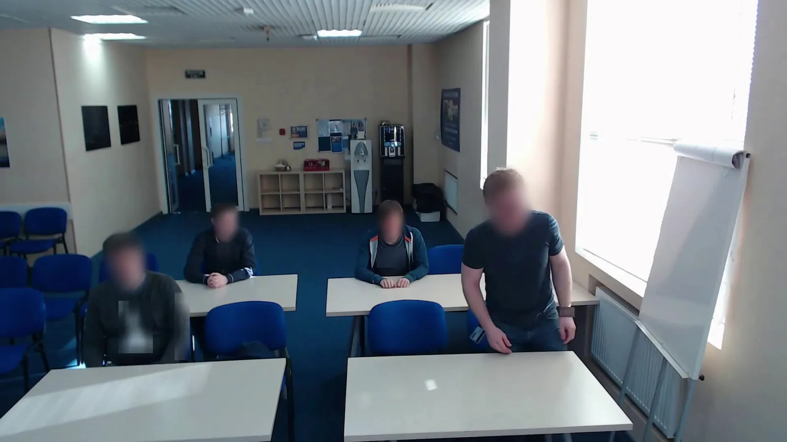

הסרטון לא עוזב את המכשיר
הזיהוי, התמלול, העריכה והייצוא קורים בדפדפן או בטלפון. אין שרת שמקבל את הקבצים.
חדש: ONIT עכשיו גם בדפדפן
טשטוש פנים אוטומטי, כתוביות מעוצבות, שינוי קול והסרת רקע. הכל רץ על המכשיר שלך: בלי שרת, בלי חשבון ובלי להעלות את הסרטון לשום מקום.
חינם · בלי הרשמה · עברית ואנגלית
01 · פרטיות
ONIT מוצא כל פנים בסרטון ועוקב אחריהן לאורך הצילום, גם כשהמצלמה זזה. אפשר לבחור טשטוש, פיקסלים או כיסוי מלא, ולהשאיר פנים מסוימות גלויות.

גררו כדי להשוות
02 · הכלים
03 · בלי ענן
הזיהוי, התמלול, העריכה והייצוא קורים בדפדפן או בטלפון. אין שרת שמקבל את הקבצים.
פותחים ומתחילים לעבוד. אין הרשמה, אין ענן ואין מנוי.
מיקום הצילום ופרטי המכשיר לא נשמרים בקובץ המיוצא.
04 · איפה שנוח
בלי התקנה: במחשב, בטלפון ובטאבלט. אפשר להתקין את האתר כאפליקציה ולשתף אליו סרטונים מהגלריה.
פתיחה בדפדפןאפליקציה מלאה לטלפון ולטאבלט, עם מסך עריכה רחב בטאבלט ותמלול עברית במודל שאומן לעברית (ivrit.ai).
הורדת האפליקציההנגן, ציר הזמן והכלים באותו מסך, ולוח מאפיינים לכל טשטוש ולכל כתובית.
05 · בתנועה
06 · איך זה עובד
מהמחשב או מהגלריה, או גוררים אותו לחלון.
ומטשטש אותן אוטומטית. כל אחת אפשר לשנות או להשאיר גלויה.
כתוביות, סאונד ורקע, ואז ייצוא מוכן לרשתות.
07 · שאלות
באמת. הסרטון נקרא ישירות מהמכשיר ומעובד בו. מהרשת יורדים רק האתר עצמו והמודלים שהוא צריך.
כלום. אין מנוי, אין פרסומות ואין הרשמה. הקוד זמין ב-GitHub.
Chrome או Edge עדכניים, במחשב או באנדרואיד. שם זיהוי הפנים רץ על כרטיס המסך (WebGPU). בלי WebGPU הוא רץ על המעבד ולוקח יותר זמן.
אותם כלים ואותו עיצוב. באפליקציה לאנדרואיד התמלול בעברית מבוסס על מודל שאומן במיוחד לעברית (ivrit.ai).
מורידים את קובץ ה-APK מעמוד ההורדות ב-GitHub, פותחים אותו בטלפון ומאשרים התקנה. נדרש Android 10 ומעלה (arm64).